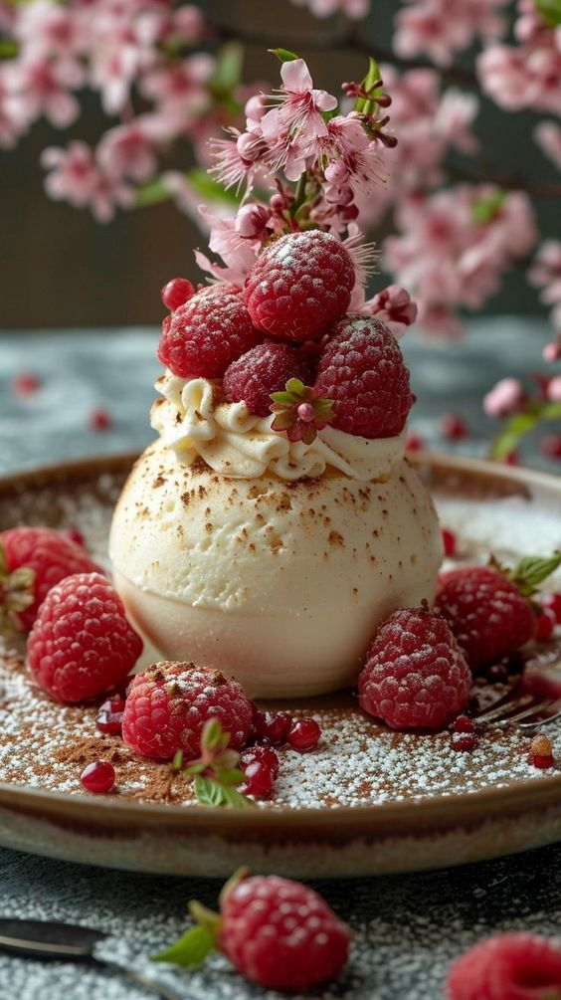

The Tatli Cake Shop specialises in exquisitely hand-crafted, premium celebration cakes for any occasion. We have a team of highly skilled cake designers and decorators who can create a truly personalised and memorable cake which is bound to delight at your special occasion. he Cake Shop sells a wide range of cake decorating accessories including edible goods, ribbons, sugarcraft materials, tools and equipment. To discuss your requirements in more detail with our team of designers.
We have been trading since 2000 in the historic city of Baku, Our shop is regularly featured in both local and national media. The Tatli Cake Shop is located within the historic Covered Towns and is a focal point for many of the guided walking tours that pass through the city as well as providing locals and tourists with an opportunity to watch our skilled cake artists at work. Our cakes are made from the highest quality ingredients sourced fresh from the best UK producers, many of which we have been working in partnership with since the business began

You can choose and order any type of cake decoration in our cake shop . We are working professional , enthusiastic and energetic individuals team. So, they are ready to decorate, learning new decorating skills alongside experienced decorators, learning how to write messages on cakes for customer orders
Our shop is regularly featured in both local and national media. The Tatli Cake Shop is located within the historic Covered Towns and is a focal point for many of the guided walking tours that pass through the city as well as providing locals and tourists with an opportunity to watch our skilled cake artists at work. Our cakes are made from the highest quality ingredients sourced fresh from the best UK producers, many of which we have been working in partnership with since the business began